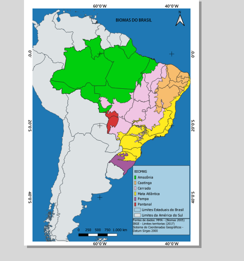
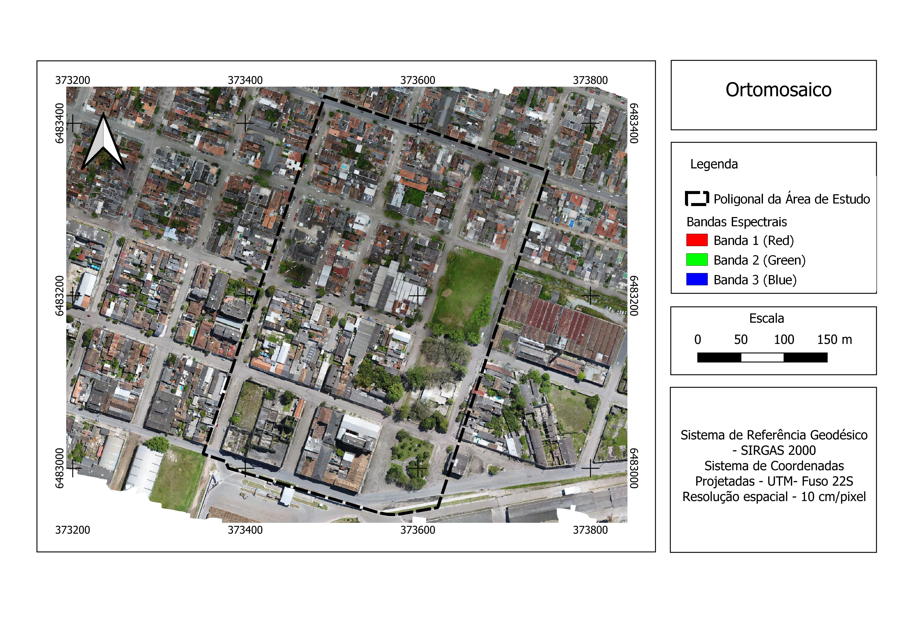

catálogo
Mapas Profissionais
Galeria de produtos cartográficos desenvolvidos com dados abertos e ferramentas GIS.
catálogo
Mapas Profissionais
Galeria de produtos cartográficos desenvolvidos com dados abertos e ferramentas GIS.

Concluído
Mapeamento de Uso e Cobertura da Terra
Classificação supervisionada e análise de transição de paisagem com dados MapBiomas e QGIS.
🌾
Em dev
Índice de Vegetação (NDVI) por Safra
Análise de vigor vegetativo e saúde da cultura com imagens Sentinel-2, bandas 4 e 8.

🌳 Disponível
Biomas do Brasil
Mapa temático com a distribuição dos biomas continentais brasileiros e limites estaduais.

🏙️ Disponível
Projeto Cartográfico — Porto de Pelotas
Mapeamento cadastral urbano com classificação de lotes, praças e edificações. Projeto LabSG / UFPel.